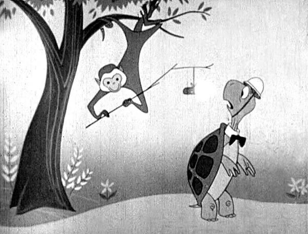
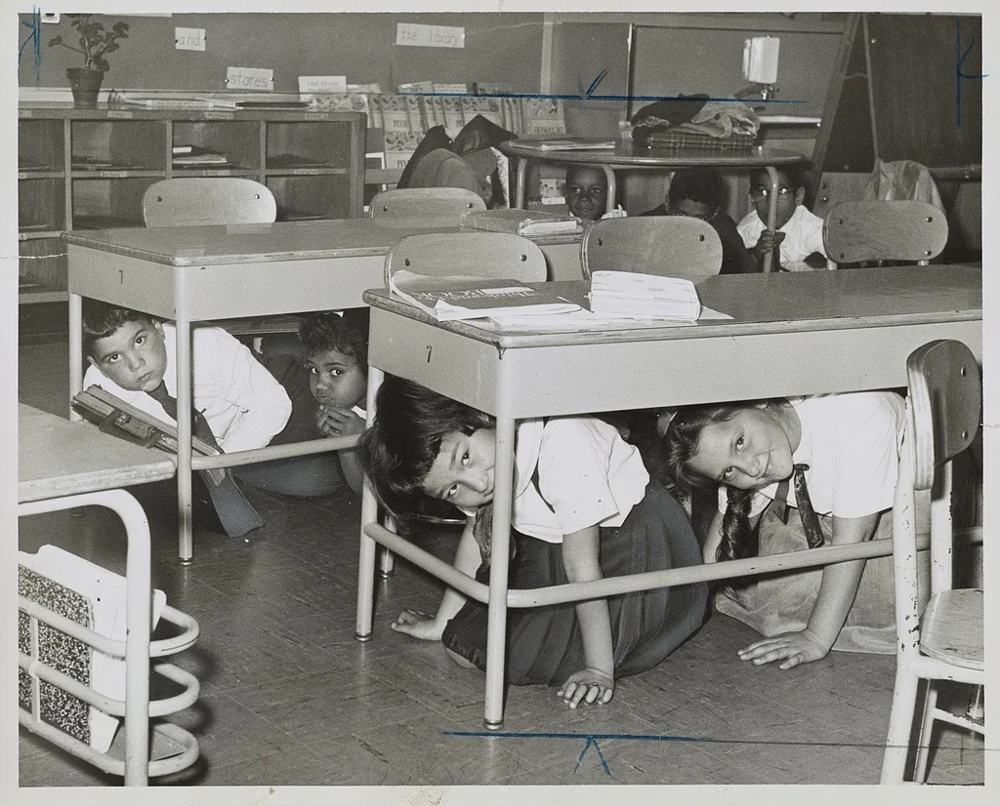
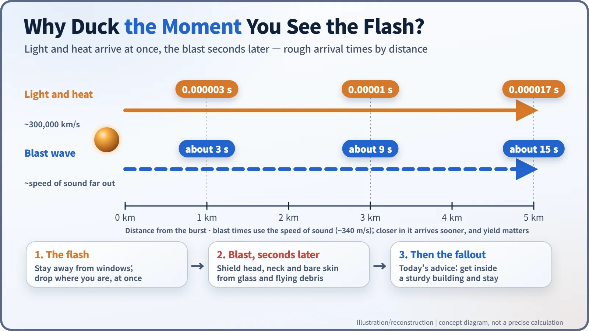
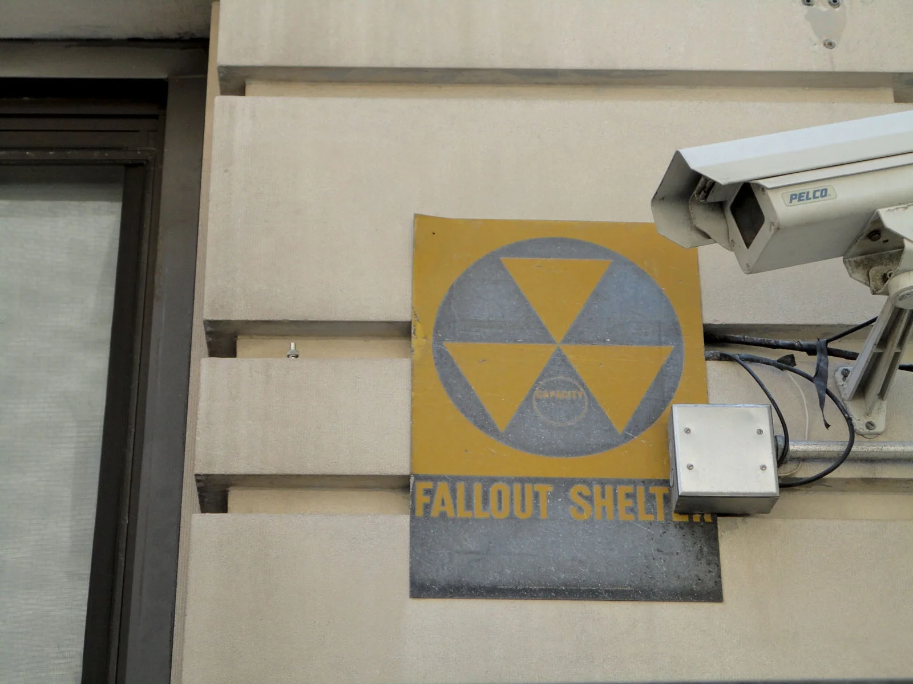
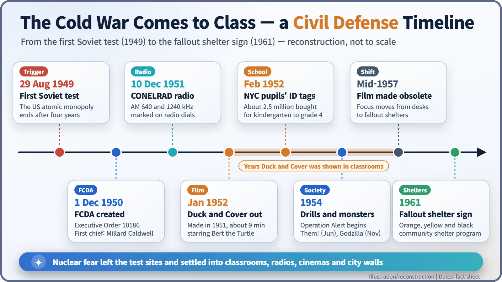

Nuclear History · 149
Two Little Triangles on the Radio Dial — Duck and Cover, Bert the Turtle and Cold War Civil Defense
A cartoon turtle taught millions of children to drop at the flash, and the physics behind the much-mocked drill was more nuanced than its reputation.
After the first Soviet atomic test in 1949, the United States set up a Federal Civil Defense Administration and taught a generation of schoolchildren to "duck and cover" with a cartoon turtle named Bert. The drills were mocked later, but the physics behind them was more nuanced, and their story shows how nuclear fear moved into classrooms, radios and cinemas.
Two little triangles on the radio dial
Look closely at the tuning dial of a radio sold in 1950s America and you may spot something odd: two small triangles, one at 640 and one at 1240 on the AM band. They did not mark favourite stations. In a nuclear attack alert, ordinary broadcasting would go silent and emergency information would come only on those two frequencies. From 1953 to 1963, radios sold in the United States were required to carry the marks. The atomic age had moved beyond the test sites, into living rooms, classrooms and cinemas. [4]
The monopoly ends, and "preparedness" begins
On 29 August 1949 the Soviet Union tested its first atomic bomb, ending the American nuclear monopoly after four years. When the Korean War broke out in June 1950, the idea that "our city could be hit" suddenly felt real.
On 1 December 1950 President Truman created the Federal Civil Defense Administration (FCDA) by Executive Order 10186, and the Federal Civil Defense Act made it a statutory agency on 12 January 1951. Its first administrator was Millard Caldwell (1897–1984), a former governor of Florida. The agency's job was not only physical (shelters, sirens, emergency broadcasting) but also psychological: raising citizens who would act calmly instead of panicking. On 10 December 1951 the emergency broadcasting system behind those two triangles, CONELRAD, was officially introduced. [5] [4]
A nine-minute film and its star, Bert the Turtle
The best-known tool for teaching that calm to the youngest citizens was the film Duck and Cover. The FCDA commissioned it in 1951 from Archer Productions in New York; Anthony Rizzo directed it, and it runs a little over nine minutes. Sources usually separate the production year (1951) from its release to schools, generally given as January 1952. [1] [3]

The film opens as a cartoon. Bert, a turtle in a bow tie and helmet, is strolling along when a monkey in a tree dangles a firecracker beside him. The instant it pops, Bert pulls himself into his shell. Then live-action footage shows children from Queens, New York, doing the same. "When you see the flash," the narrator explains, stop whatever you are doing and drop at once, covering your head and neck, against a wall, under a desk, wherever you happen to be. [2]
Children rehearsed it again and again. In November 1951 a sixth-grade class in Queens was photographed crouching under and beside their desks; ten years later pupils in Brooklyn were still doing it. In February 1952 New York City reportedly bought about 2.5 million metal identification tags, and by April most children from kindergarten to fourth grade wore one on a chain. [3] [6]

Did ducking actually help?
The film is often remembered as absurd propaganda, as if a school desk could stop an atomic bomb. The physics is more nuanced. The light and heat of a nuclear explosion travel at about 300,000 km per second and arrive essentially instantly, but the blast wave that smashes buildings has to push through the air and arrives later. One estimate puts it at roughly 7 to 10 seconds for someone 3 km away. Anyone who walks to a window in those seconds to see what happened risks serious injury from shattering glass. When a munitions ship exploded in Halifax harbour, Canada, in 1917, about 200 people who had gone to their windows after the flash were blinded by flying glass. [7]

So for people close to ground zero, ducking would have been useless; for the many farther away, dropping and covering could reduce burns and glass injuries. Others, such as the historian Guy Oakes, have argued that the drills mattered more psychologically, as rehearsals of calm, than practically, and the 1982 documentary The Atomic Cafe lampooned the era's civil defense films as propaganda. [7] [1]
From the classroom to the cinema
Fear also became entertainment. In Warner Bros.' Them!, released in June 1954, ants grown gigantic from the radiation of the first atomic test swarm into the storm drains of Los Angeles, one of the first "nuclear monster" films of the decade. On 3 November that same year, Godzilla opened in Japan. And from 1954 a nationwide civil defense exercise, Operation Alert, began to be held every year. [8]
From under the desk to the fallout shelter
The film's working life was shorter than its fame. According to the historian Jake Hughes, quoted by the Library of Congress, Duck and Cover "appears to have been pulled from circulation just three and half years after its release," and by mid-1957 it had been declared obsolete because "the practice of crouching beneath a desk was no longer considered a reliable safety measure." As the power of hydrogen bombs and the reach of their fallout became known, preparedness shifted from desks to fallout shelters. The notice appeared only in newsletters for civil defense officials, so most Americans probably never heard about it. [1]
In 1961 the orange, yellow and black fallout shelter sign, designed by Robert W. Blakeley of the US Army Corps of Engineers, began appearing on buildings with sturdy basements. [9]

In 2004 the Library of Congress added Duck and Cover to the National Film Registry, noting that it "was seen by millions of schoolchildren in the 1950s." Today's US guidance for a nuclear emergency still begins with getting down and covering up in the first moment, then getting inside a sturdy building and staying there for hours. The Cold War's nuclear fear was etched not only on test sites but in classrooms, cinemas and two little triangles on a radio dial. [1] [7]
